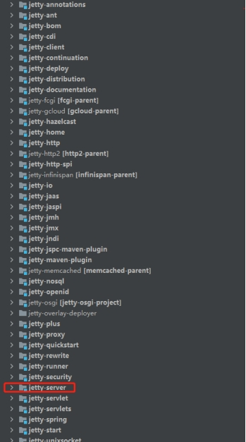
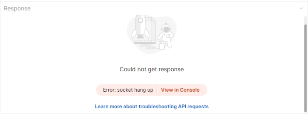
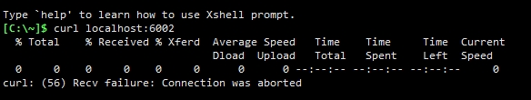
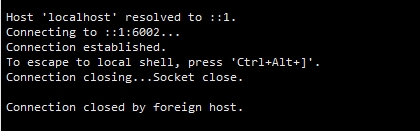

<!DOCTYPE html>
<html lang class="loading">
<head><meta name="generator" content="Hexo 3.8.0">
    <meta charset="UTF-8">
    <meta http-equiv="X-UA-Compatible" content="IE=edge,chrome=1">
    <meta name="viewport" content="width=device-width, minimum-scale=1.0, maximum-scale=1.0, user-scalable=no">
    <title>基于Web容器实现java网络层限流 - Linco</title>
    <meta name="apple-mobile-web-app-capable" content="yes">
    <meta name="apple-mobile-web-app-status-bar-style" content="black-translucent">
    <meta name="google" content="notranslate">
    <meta name="keywords" content="Linco, Blog,"> 
    <meta name="description" content="一. 需求背景企业后台系统需要对接入流量进行限制, 设计从三个层面对接入连接分用户设置限制

TCP连接限制, 需要在TCP连接建立之前限制超量链接的建立

http请求数量限制, 针对用户分接口限,"> 
    <meta name="author" content="Linco"> 
    <link rel="alternative" href="atom.xml" title="Linco" type="application/atom+xml"> 
    <link rel="icon" href="/img/icon.png"> 
    <link rel="stylesheet" href="//cdn.jsdelivr.net/npm/gitalk@1/dist/gitalk.css">
    <link rel="stylesheet" href="/css/diaspora.css">

</head>
</html>
<body class="loading">
    <span id="config-title" style="display:none">Linco</span>
    <div id="loader"></div>
    <div id="single">
    <div id="top" style="display: block;">
    <div class="bar" style="width: 0;"></div>
    <a class="icon-home image-icon" href="javascript:;" data-url></a>
    <div title="播放/暂停" class="icon-play"></div>
    <h3 class="subtitle">基于Web容器实现java网络层限流</h3>
    <div class="social">
        <!--<div class="like-icon">-->
            <!--<a href="javascript:;" class="likeThis active"><span class="icon-like"></span><span class="count">76</span></a>-->
        <!--</div>-->
        <div>
            <div class="share">
                <a title="获取二维码" class="icon-scan" href="javascript:;"></a>
            </div>
            <div id="qr"></div>
        </div>
    </div>
    <div class="scrollbar"></div>
</div>

    <div class="section">
        <div class="article">
    <div class="main">
        <h1 class="title">基于Web容器实现java网络层限流</h1>
        <div class="stuff">
            <span>十二月 16, 2021</span>
            
  <ul class="post-tags-list"><li class="post-tags-list-item"><a class="post-tags-list-link" href="/tags/分布式/">分布式</a></li><li class="post-tags-list-item"><a class="post-tags-list-link" href="/tags/计算机网络/">计算机网络</a></li></ul>


        </div>
        <div class="content markdown">
            <h4 id="一-需求背景"><a href="#一-需求背景" class="headerlink" title="一. 需求背景"></a><strong>一. 需求背景</strong></h4><p>企业后台系统需要对接入流量进行限制, 设计从三个层面对接入连接分用户设置限制</p>
<ol>
<li><p>TCP连接限制, 需要在TCP连接建立之前限制超量链接的建立</p>
</li>
<li><p>http请求数量限制, 针对用户分接口限制QPS</p>
</li>
<li><p>请求数量限制, 限制每个请求的数据量大小</p>
</li>
</ol>
<p>​    </p>
<p><strong><em>本资料针对限流的第一层, 提供TCP连接控制的实现方案</em></strong></p>
<p>​    </p>
<p>当前系统的网络结构和组件信息为:</p>
<p>数据连接由阿里云slb作为顶层入口, 透传tcp连接至zuul网关, 在zuul建立对外连接并解析处理http请求. zuul使用路由反向代理功能, 转发http请求至各业务服务. </p>
<p>Zuul网关采用SpringBoot2.3.0, 配套zuul版本为1.3.1, 内部集成tomcat作为http服务和Servlet容器.</p>
<p>​    </p>
<p>​    </p>
<h4 id="二-可选方案"><a href="#二-可选方案" class="headerlink" title="二. 可选方案"></a><strong>二. 可选方案</strong></h4><p>结合现有系统的服务结构和组件, 基于最小化变更内容的目标和团队技术领域特点, 现有四种控制tcp连接的可选方案</p>
<p>​    </p>
<p><strong>1.</strong> <strong><em>升级zuul2.0版本</em></strong> </p>
<p>zuul2.0不再使用servlet容器, 而是集成netty进行http网络编程, 可以对zuul的netty连接过程做二次开发</p>
<p>缺点是要研究zuul2.0的springboot集成方案, 以及处理zuul1.x升级到2.x的兼容性问题</p>
<p>​    </p>
<p><strong>2.</strong> <strong><em>使用Gateway网关替换</em></strong></p>
<p>Gateway是SpringCloud官方配套的网关和路由组件, 和zuul功能相近, gateway本身和springboot体系直接契合, 通过netty实现. 将zuul网关替换为Gateway, 实现对tcp连接过程的原理与zuul2.0的方案一致</p>
<p>替换gateway网关的缺点是gateway和zuul的内部实现完全不同, 网关模块涉及网络通信的配置信息和业务代码都要改写</p>
<p>​    </p>
<p><strong>3.</strong> <strong><em>添加nginx中间层</em></strong> </p>
<p>nginx除了处理http(s)请求, 也能够响应tcp/udp等网络层请求. 对nginx重新编译, 集成lua编程模块, 编写lua脚本控制网络连接层是可行的</p>
<p>添加nginx协议转发层会增加系统的复杂度, 可能增加系统内部网络负担, 延长请求响应路径. 并且存在多数开发人员对lua编程不熟悉的问题</p>
<p>​      </p>
<p><strong>4.</strong> <strong><em>修改Jetty替换现有zuul 1.3的tomcat容器</em></strong> </p>
<p>tomcat和jetty同为servlet容器的开源实现, 都按照javax servlet的标准实现相关功能, 两者在一般场景下可以简单切换. 其中tomcat应用的规模较大, 使用内部网络编程处理流程实现网络功能, 相比之下jetty规模小, 结构相对简单, 源码更容易理解和修改. 并且jetty通过netty框架实现, 在编写网络层处理逻辑时可以借鉴部分netty的网络编程资料. </p>
<p>修改jetty方案需要解决组件替换的问题, 并且jetty只是相对tomcat规模小, 本身包含50+模块, 修改的复杂度不可预知</p>
<p>​      </p>
<p>可见, 四种解决方案都需要应对网络编程之外的其他问题, 在处理组件和现有业务功能的适配融合后才能开始连接管理方面功能的研发.</p>
<p>本资料采用方案 4.<strong><em>修改Jetty替换现有zuul 1.3的tomcat容器</em></strong></p>
<p>​    </p>
<p>​    </p>
<h4 id="三-方案落地"><a href="#三-方案落地" class="headerlink" title="三. 方案落地"></a><strong>三. 方案落地</strong></h4><p>现有系统使用SpringBoot2.3.0, 经依赖分析, 适配jetty版本为9.4.28.v20200408. 下载jetty项目源码并切换至对应版本</p>
<p>阅读源码, 找到处理连接过程的模块</p>
<p>如图, 最终找到TCP连接的处理模块为<strong><em>jetty-server</em></strong></p>
<p> </p>
<p>​    </p>
<p>Jetty-server服务中的<strong><em>ServerConnector类</em></strong>负责进行网络连接, 在连接准备建立时, 通过<strong><em>ServerSocketChannel</em></strong>调用本地方法中的<strong><em>accept()</em></strong>, 从网卡设备上获取网络连接地址等信息, 操作连接握手的过程. 跟踪调用可以看到ServerSocketChannel拿到了一个<strong><em>socketChannel</em></strong>, socketChannel是java nio的channel实现, 包含本地地址信息, 远程地址信息, 连接配置信息, 并<strong><em>提供数据通道的开关控制</em></strong>相关方法.</p>
<p>​    </p>
<p><strong><em>修改ServerConnector的accept()方法</em></strong>, 将连接建立过程暴露可编程接口到外部, 业务开发过程即可任意控制, 修改代码如下:</p>
<figure class="highlight java"><table><tr><td class="gutter"><pre><span class="line">1</span><br><span class="line">2</span><br><span class="line">3</span><br><span class="line">4</span><br><span class="line">5</span><br><span class="line">6</span><br><span class="line">7</span><br><span class="line">8</span><br><span class="line">9</span><br><span class="line">10</span><br><span class="line">11</span><br><span class="line">12</span><br><span class="line">13</span><br><span class="line">14</span><br><span class="line">15</span><br><span class="line">16</span><br><span class="line">17</span><br><span class="line">18</span><br><span class="line">19</span><br><span class="line">20</span><br><span class="line">21</span><br><span class="line">22</span><br><span class="line">23</span><br></pre></td><td class="code"><pre><span class="line"><span class="meta">@Override</span></span><br><span class="line"><span class="function"><span class="keyword">public</span> <span class="keyword">void</span> <span class="title">accept</span><span class="params">(<span class="keyword">int</span> acceptorID)</span> <span class="keyword">throws</span> IOException</span></span><br><span class="line"><span class="function"></span>&#123;</span><br><span class="line">  ServerSocketChannel serverChannel = _acceptChannel;</span><br><span class="line">  <span class="keyword">if</span> (serverChannel != <span class="keyword">null</span> &amp;&amp; serverChannel.isOpen())</span><br><span class="line">  &#123;</span><br><span class="line">    <span class="comment">// 这里只知道有连接要进来, 需要由native.accept()后才能写入remoteAddr</span></span><br><span class="line">    SocketChannel channel = serverChannel.accept();</span><br><span class="line">    channel.getRemoteAddress().toString();</span><br><span class="line">    <span class="keyword">if</span> (!connectFilterList.isEmpty())</span><br><span class="line">    &#123;</span><br><span class="line">      <span class="keyword">for</span> (IConnectFilter connectFilter : connectFilterList)</span><br><span class="line">      &#123;</span><br><span class="line">        <span class="keyword">if</span> (connectFilter.isReject(channel.getRemoteAddress()))</span><br><span class="line">        &#123;</span><br><span class="line">          channel.close();</span><br><span class="line">          <span class="keyword">return</span>;</span><br><span class="line">        &#125;</span><br><span class="line">      &#125;</span><br><span class="line">    &#125;</span><br><span class="line">    accepted(channel);</span><br><span class="line">  &#125;</span><br><span class="line">&#125;</span><br></pre></td></tr></table></figure>
<p>新建接口类, 定义业务编程的入口方法isReject()</p>
<figure class="highlight java"><table><tr><td class="gutter"><pre><span class="line">1</span><br><span class="line">2</span><br><span class="line">3</span><br><span class="line">4</span><br><span class="line">5</span><br></pre></td><td class="code"><pre><span class="line"><span class="keyword">import</span> java.net.SocketAddress;</span><br><span class="line"><span class="keyword">public</span> <span class="class"><span class="keyword">interface</span> <span class="title">IConnectFilter</span></span></span><br><span class="line"><span class="class"></span>&#123;</span><br><span class="line">  <span class="function"><span class="keyword">boolean</span> <span class="title">isReject</span><span class="params">(SocketAddress remoteAddress)</span></span>;</span><br><span class="line">&#125;</span><br></pre></td></tr></table></figure>
<p>​    </p>
<p>考虑到功能的可拓展性, 这里按责任链模式设计代码, 使用最简单的直线链. 首先在ServerConnector类定义一个静态属性, <strong><em>List<iconnectfilter> connectFilterList</iconnectfilter></em></strong>, 是新接口的处理链列表. 然后再提供静态方法用于管理列表, 基于责任链隔离原则, 静态方法只提供添加处理节点的功能</p>
<figure class="highlight java"><table><tr><td class="gutter"><pre><span class="line">1</span><br><span class="line">2</span><br><span class="line">3</span><br><span class="line">4</span><br><span class="line">5</span><br><span class="line">6</span><br></pre></td><td class="code"><pre><span class="line"><span class="keyword">private</span> <span class="keyword">static</span> List&lt;IConnectFilter&gt; connectFilterList = <span class="keyword">new</span> LinkedList&lt;&gt;();</span><br><span class="line"></span><br><span class="line"><span class="function"><span class="keyword">public</span> <span class="keyword">static</span> <span class="keyword">void</span> <span class="title">addTcpConnectFilter</span><span class="params">(IConnectFilter connectFilter)</span></span></span><br><span class="line"><span class="function"></span>&#123;</span><br><span class="line">    connectFilterList.add(connectFilter);</span><br><span class="line">&#125;</span><br></pre></td></tr></table></figure>
<p>​    </p>
<p>以上, 最终对外的可编程接口是ServerConnector.addTcpConnectFilter(), 我们在应用初始化时调用这个方法, 传入具体的连接控制业务逻辑, 就能够自由控制tcp连接的建立</p>
<p>​    </p>
<p>​    </p>
<h4 id="四-使用方法"><a href="#四-使用方法" class="headerlink" title="四. 使用方法"></a>四. 使用方法</h4><p><strong>1.</strong> <strong><em>编译修改源码的jetty, 发布maven</em></strong></p>
<p>进入jetty-server模块目录, 执行</p>
<figure class="highlight plain"><figcaption><span>install -f pom.xml```</span></figcaption><table><tr><td class="gutter"><pre><span class="line">1</span><br><span class="line">2</span><br><span class="line">3</span><br><span class="line">4</span><br><span class="line">5</span><br><span class="line">6</span><br><span class="line">7</span><br><span class="line">8</span><br><span class="line">9</span><br><span class="line">10</span><br><span class="line">11</span><br><span class="line">12</span><br><span class="line">13</span><br><span class="line">14</span><br></pre></td><td class="code"><pre><span class="line"></span><br><span class="line">​    </span><br><span class="line"></span><br><span class="line">**2.** ***排除tomcat相关依赖***</span><br><span class="line"></span><br><span class="line">找到&lt;dependency&gt;中的spring-boot-starter-web, 添加依赖排除规则</span><br><span class="line"></span><br><span class="line">```xml</span><br><span class="line">&lt;/exclusions&gt; </span><br><span class="line">  &lt;exclusion&gt;</span><br><span class="line">    &lt;groupId&gt;org.springframework.boot&lt;/groupId&gt;</span><br><span class="line">    &lt;artifactId&gt;spring-boot-starter-tomcat&lt;/artifactId&gt;</span><br><span class="line">  &lt;/exclusion&gt;</span><br><span class="line">&lt;/exclusions&gt;</span><br></pre></td></tr></table></figure>
<p>​    </p>
<p><strong>3.</strong> <strong><em>添加自编译jetty依赖包</em></strong></p>
<p>假设依赖包为9.4.28.linco, 在<dependency>中添加依赖</dependency></p>
<figure class="highlight xml"><table><tr><td class="gutter"><pre><span class="line">1</span><br><span class="line">2</span><br><span class="line">3</span><br><span class="line">4</span><br><span class="line">5</span><br></pre></td><td class="code"><pre><span class="line"><span class="tag">&lt;<span class="name">dependency</span>&gt;</span></span><br><span class="line">  <span class="tag">&lt;<span class="name">groupId</span>&gt;</span>org.eclipse.jetty<span class="tag">&lt;/<span class="name">groupId</span>&gt;</span></span><br><span class="line">  <span class="tag">&lt;<span class="name">artifactId</span>&gt;</span>jetty-server<span class="tag">&lt;/<span class="name">artifactId</span>&gt;</span></span><br><span class="line">  <span class="tag">&lt;<span class="name">version</span>&gt;</span>9.4.28.linco<span class="tag">&lt;/<span class="name">version</span>&gt;</span></span><br><span class="line"><span class="tag">&lt;/<span class="name">dependency</span>&gt;</span></span><br></pre></td></tr></table></figure>
<p>​     </p>
<p><strong>4.</strong> <strong><em>业务使用</em></strong></p>
<p>这里以随机数示例展示具体使用方法 </p>
<p><code>ServerConnector.addTcpConnectFilter(addr-&gt; new Random.nextBoolean());</code></p>
<p>​    </p>
<p>推荐用@Configuration类实现InitializingBean接口作为配置入口, 这样有助于维持系统代码分层, 也方便通过Springboot注入所需业务类</p>
<p>​    </p>
<p><strong>5.</strong> <strong><em>测试</em></strong></p>
<p>当请求受到tcp连接限制, 不同工具下直观响应结果如下</p>
<ul>
<li>Postman:</li>
</ul>
<p> </p>
<p>​    </p>
<ul>
<li>Curl:</li>
</ul>
<p></p>
<p>​    </p>
<ul>
<li>Tenlet:</li>
</ul>
<p>​     </p>
<p>​    </p>
<p>​    </p>
<h4 id="五-存在问题"><a href="#五-存在问题" class="headerlink" title="五. 存在问题"></a><strong>五. 存在问题</strong></h4><p>WEB请求多数为http(s)<strong><em>长连接</em></strong>, 远程调用也可由客户端选择连接方式, 长连接在建立后可以传送<strong><em>多个</em></strong>http请求报文, 报文传输次数<strong><em>不再受tcp连接的控制</em></strong></p>
<p>​    </p>
<p>TCP连接建立过程客户端需要发送两次握手请求至服务端, 所有如果计算频次的话, <strong><em>有效连接数</em></strong>应该是<strong><em>tcp握手通过次数/2</em></strong></p>
<p>​    </p>
<p>#### </p>
<h4 id="六-其他"><a href="#六-其他" class="headerlink" title="六. 其他"></a><strong>六. 其他</strong></h4><p>Jetty与Tomcat都为Apache License v2.0协议授权, 更改源代码之后的需要在新文件和修改位置添加声明</p>
<p>Jetty源码使用的代码格式约束要求将左大括号写在新行, 否则编译不通过</p>
<p>​    </p>

            <!--[if lt IE 9]><script>document.createElement('audio');</script><![endif]-->
            <audio id="audio" loop="1" preload="auto" controls="controls" data-autoplay="true">
                <source type="audio/mpeg" src="/music/default_bgm.mp3">
            </audio>
            
        </div>
        
    <div id="gitalk-container" class="comment link" data-ae="false" data-ci="978518cc439cd352dd0b" data-cs="2d89825e7db6df72d065714d6b4ac1ce1829b14e" data-r="LincoXiaoQ.github.io" data-o="LincoXiaoQ" data-a="LincoXiaoQ" data-d="false">查看评论</div>


    </div>
    
</div>


    </div>
</div>
</body>
<script src="//cdn.jsdelivr.net/npm/gitalk@1/dist/gitalk.min.js"></script>
<script src="//lib.baomitu.com/jquery/1.8.3/jquery.min.js"></script>
<script src="/js/plugin.js"></script>
<script src="/js/diaspora.js"></script>
<link rel="stylesheet" href="/photoswipe/photoswipe.css">
<link rel="stylesheet" href="/photoswipe/default-skin/default-skin.css">
<script src="/photoswipe/photoswipe.min.js"></script>
<script src="/photoswipe/photoswipe-ui-default.min.js"></script>

<!-- Root element of PhotoSwipe. Must have class pswp. -->
<div class="pswp" tabindex="-1" role="dialog" aria-hidden="true">
    <!-- Background of PhotoSwipe. 
         It's a separate element as animating opacity is faster than rgba(). -->
    <div class="pswp__bg"></div>
    <!-- Slides wrapper with overflow:hidden. -->
    <div class="pswp__scroll-wrap">
        <!-- Container that holds slides. 
            PhotoSwipe keeps only 3 of them in the DOM to save memory.
            Don't modify these 3 pswp__item elements, data is added later on. -->
        <div class="pswp__container">
            <div class="pswp__item"></div>
            <div class="pswp__item"></div>
            <div class="pswp__item"></div>
        </div>
        <!-- Default (PhotoSwipeUI_Default) interface on top of sliding area. Can be changed. -->
        <div class="pswp__ui pswp__ui--hidden">
            <div class="pswp__top-bar">
                <!--  Controls are self-explanatory. Order can be changed. -->
                <div class="pswp__counter"></div>
                <button class="pswp__button pswp__button--close" title="Close (Esc)"></button>
                <button class="pswp__button pswp__button--share" title="Share"></button>
                <button class="pswp__button pswp__button--fs" title="Toggle fullscreen"></button>
                <button class="pswp__button pswp__button--zoom" title="Zoom in/out"></button>
                <!-- Preloader demo http://codepen.io/dimsemenov/pen/yyBWoR -->
                <!-- element will get class pswp__preloader--active when preloader is running -->
                <div class="pswp__preloader">
                    <div class="pswp__preloader__icn">
                      <div class="pswp__preloader__cut">
                        <div class="pswp__preloader__donut"></div>
                      </div>
                    </div>
                </div>
            </div>
            <div class="pswp__share-modal pswp__share-modal--hidden pswp__single-tap">
                <div class="pswp__share-tooltip"></div> 
            </div>
            <button class="pswp__button pswp__button--arrow--left" title="Previous (arrow left)">
            </button>
            <button class="pswp__button pswp__button--arrow--right" title="Next (arrow right)">
            </button>
            <div class="pswp__caption">
                <div class="pswp__caption__center"></div>
            </div>
        </div>
    </div>
</div>


</html>
